RED NEXUS
Cajero automático multibanca y panel de administración
Guía paso a paso para operar el cajero web del Recolector Transaccional ISO 8583: inserción de tarjeta, PIN, retiros, consultas, reversas, estado de cuenta, y administración de cuentas y tarjetas del Core Bancario.
| Sistema | Recolector Transaccional ISO 8583 + Core Bancario (SQL Server) |
| Terminal | ATM-NX-01 (identificador ISO ATMNX001) |
| Dirección de acceso | http://localhost:8087 |
| Moneda | Quetzales (GTQ, código ISO 4217 320) |
| Versión del sistema | 1.0.0 |
| Fecha | Octubre de 2026 |
Contenido
- Introducción y acceso
- Partes del cajero y teclas
- Cuentas de demostración
- Insertar la tarjeta
- Ingresar el PIN
- Menú principal
- Retiro de efectivo
- Comprobante (recibo)
- Consulta de saldo
- Reversa del último retiro
- Estado de cuenta
- Seguridad del PIN, PIN incorrecto y bloqueo
- Echo test de red
- Mensajes de rechazo
- Panel de administración: acceso
- Gestión de cuentas y tarjetas
- Historial de transacciones
- Consola ISO 8583
- Preguntas frecuentes y solución de problemas
Convenciones de este manual
- F1…F8: teclas de función del teclado de la computadora, equivalentes a los botones laterales del cajero.
- L1–L4 / R1–R4: botones laterales izquierdos y derechos de la pantalla del cajero, de arriba hacia abajo.
- DE 39: código de respuesta ISO 8583 que devuelve el banco (por ejemplo,
00= aprobada).
1. Introducción y acceso
El cajero RED NEXUS es la interfaz web del Recolector Transaccional ISO 8583. Cada operación que se realiza en el cajero se convierte en una trama ISO 8583 (por ejemplo, un retiro es un mensaje 0200), viaja al Recolector, que consulta al Core Bancario y devuelve la respuesta del banco (mensaje 0210 con el código DE 39). Los saldos y movimientos se guardan en SQL Server.
Requisitos
- El sistema en ejecución (con Docker:
docker compose up -d --build; ver el README del proyecto). - Un navegador actualizado (Chrome, Edge o Firefox).
Acceso
- Abra http://localhost:8087 en el navegador (si cambió el puerto en el archivo
.env, use ese). - Aparece el cajero en la pantalla de bienvenida. No se necesita iniciar sesión para usar el cajero.
- El panel de administración requiere usuario y contraseña (capítulo 15).
CoreBancario5B.2. Partes del cajero y teclas
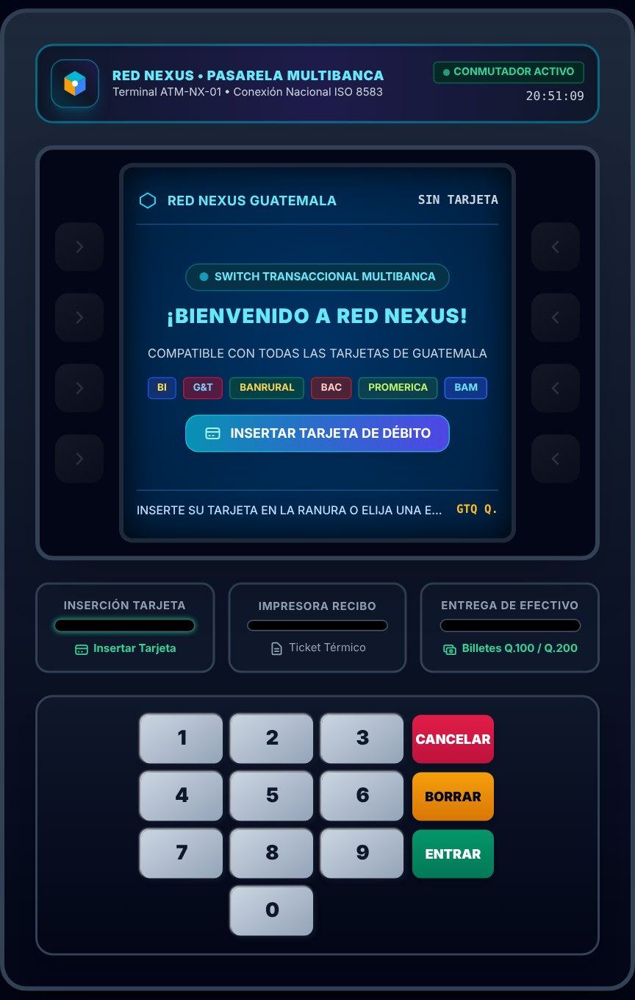
- Marquesina: nombre y logotipo del banco de la tarjeta insertada (RED NEXUS cuando no hay tarjeta) y la hora.
- Pantalla con botones laterales: cuatro botones a cada lado (L1–L4 y R1–R4). Cada opción de la pantalla está alineada con su botón.
- Inserción de tarjeta: al hacer clic se abre la billetera de tarjetas; con una tarjeta dentro, el mismo control la expulsa.
- Impresora de recibo: muestra el comprobante de la última operación.
- Entrega de efectivo: se ilumina cuando un retiro es aprobado (billetes de Q100 y Q200).
- Teclado (PIN pad): dígitos 0–9, CANCELAR, BORRAR y ENTRAR.
Teclas de la computadora
Con una tarjeta insertada, el teclado de la computadora funciona igual que el del cajero:
| Tecla | Equivale a | Uso |
|---|---|---|
| F1 F2 F3 F4 | Botones L1, L2, L3, L4 | Opciones del lado izquierdo de la pantalla |
| F5 F6 F7 F8 | Botones R1, R2, R3, R4 | Opciones del lado derecho de la pantalla |
| 1…8 | Opciones 1 a 8 | En el menú principal y en el menú de retiro |
| 0…9 | Teclado numérico | PIN y monto en "Otra cantidad" |
| Enter | ENTRAR | Confirmar; en pantallas de resultado, volver al menú |
| Retroceso | BORRAR | Borrar el último dígito |
| Supr | — | Borrar todos los dígitos escritos |
| Esc | CANCELAR | Cancelar / expulsar la tarjeta; cerrar ventanas |
3. Cuentas de demostración
El sistema se entrega con cinco cuentas de prueba. Cada una tiene un estado distinto para poder demostrar aprobaciones y rechazos:
| Cuenta | Tarjeta (PAN) | Titular | Banco | Saldo | Límite diario | Estado | PIN |
|---|---|---|---|---|---|---|---|
| 1001-2002-3001 | 4532 •••• 0001 | Carlos Pérez | Banco Industrial | Q1,500.00 | Q500.00 | Activa | 1234 |
| 1001-2002-3002 | 5412 •••• 0002 | María Gómez | G&T Continental | Q350.00 | Q300.00 | Activa | 4321 |
| 1001-2002-3003 | 4000 •••• 0003 | Juan López | Banrural | Q500.00 | Q200.00 | Expirada | 2222 |
| 1001-2002-3004 | 4000 •••• 0004 | Ana Morales | BAC Credomatic | Q1,000.00 | Q500.00 | Bloqueada | 9999 |
| 1001-2002-3005 | 4000 •••• 0005 | Pedro Ramos | Banco Promerica | Q10.00 | Q100.00 | Activa | 1111 |
- Carlos Pérez y María Gómez: operaciones aprobadas.
- Juan López: tarjeta expirada (rechazo
54). - Ana Morales: tarjeta bloqueada (rechazo
05). - Pedro Ramos: saldo bajo para probar fondos insuficientes (
51) y límite diario (61).
Marca del banco
Al insertar una tarjeta, el cajero adopta los colores y el logotipo del banco registrado para esa cuenta (Banco Industrial, G&T Continental, Banrural, BAC Credomatic, Banco Promerica o BAM). Si se escribe un número de tarjeta a mano, el banco se deduce de sus primeros dígitos: 4532 Banco Industrial, 5412 G&T Continental, 4023 Banrural, 4152 BAC Credomatic, 5180 Banco Promerica y 4850 BAM.
4. Insertar la tarjeta
- En la pantalla de bienvenida pulse INSERTAR TARJETA DE DÉBITO o haga clic en la ranura Inserción tarjeta.
- Se abre la Billetera Multibanca con las tarjetas registradas en el Core Bancario: titular, banco, red (VISA o MC), estado, número de tarjeta enmascarado, número de cuenta y saldo disponible.
- Pulse Insertar en la tarjeta deseada (o haga clic en cualquier parte de la fila).
- También puede escribir un número de tarjeta (PAN) en O inserte manualmente por número y pulsar
Insertar. Si la tarjeta no existe en el Core, las operaciones se rechazarán con el código
14(cuenta inexistente).
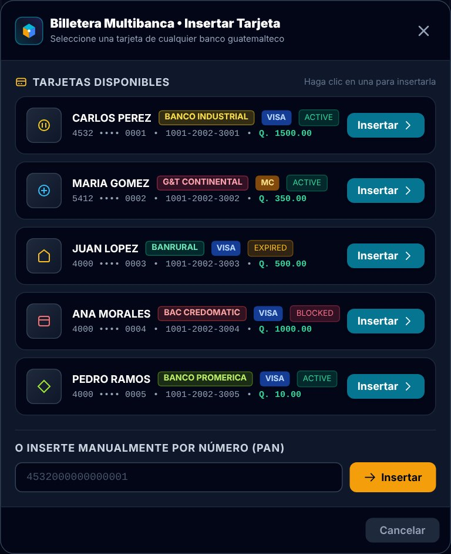
5. Ingresar el PIN
- La pantalla muestra INGRESE SU NÚMERO DE PIN SECRETO y los últimos dígitos de la tarjeta.
- Escriba los 4 dígitos con el teclado del cajero o con el de la computadora. Cada dígito aparece como un punto.
- Al completar los 4 dígitos el cajero pasa al menú principal (también puede pulsar ENTRAR).
- BORRAR (Retroceso) quita el último dígito; CANCELAR (Esc) o F8 devuelven la tarjeta.
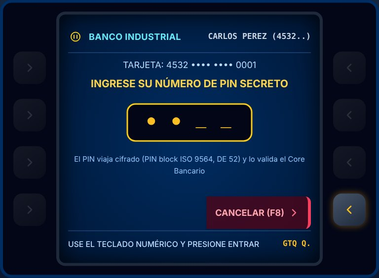
6. Menú principal
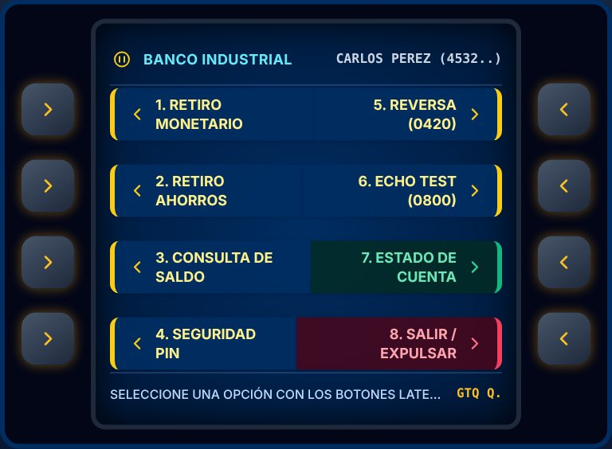
| Botón | Teclas | Opción | Qué hace |
|---|---|---|---|
| L1 | F1 / 1 | 1. Retiro monetario | Abre el menú de montos de retiro (capítulo 7). |
| L2 | F2 / 2 | 2. Retiro ahorros | Abre el mismo menú de montos; el retiro se debita de la cuenta de la tarjeta. |
| L3 | F3 / 3 | 3. Consulta de saldo | Consulta el saldo disponible y contable (capítulo 9). |
| L4 | F4 / 4 | 4. Seguridad PIN | Explica cómo se protege el PIN (capítulo 12). No muestra el PIN. |
| R1 | F5 / 5 | 5. Reversa (0420) | Anula el último retiro aprobado con esta tarjeta (capítulo 10). |
| R2 | F6 / 6 | 6. Echo test (0800) | Verifica la comunicación con el switch (capítulo 13). |
| R3 | F7 / 7 | 7. Estado de cuenta | Muestra los últimos movimientos (capítulo 11). |
| R4 | F8 / 8 | 8. Salir / expulsar | Termina la sesión y devuelve la tarjeta. |
7. Retiro de efectivo
- En el menú principal elija 1. Retiro monetario (F1) o 2. Retiro ahorros (F2).
- Elija un monto rápido o Otra cantidad:
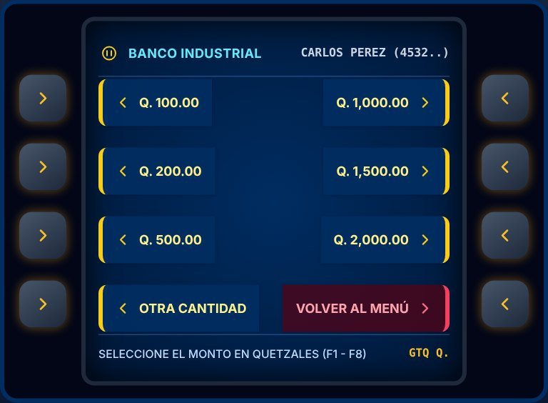
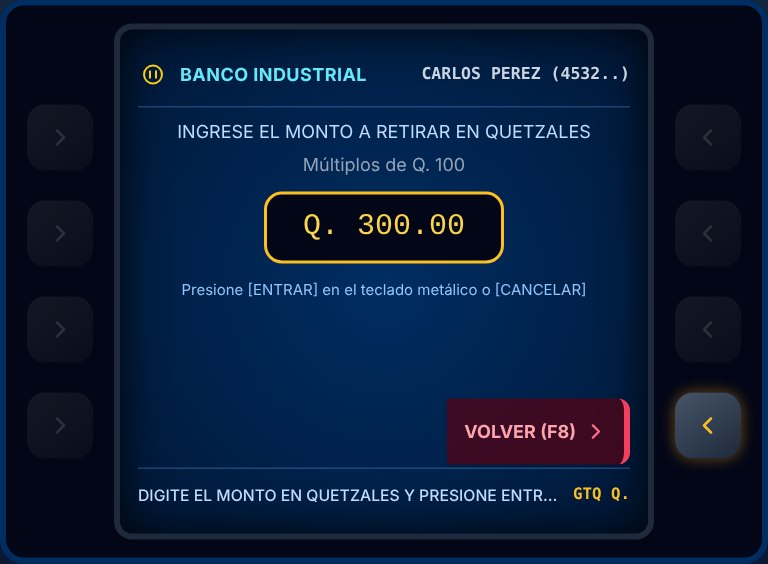
| Botón | Monto | Botón | Monto |
|---|---|---|---|
| L1 (F1) | Q100.00 | R1 (F5) | Q1,000.00 |
| L2 (F2) | Q200.00 | R2 (F6) | Q1,500.00 |
| L3 (F3) | Q500.00 | R3 (F7) | Q2,000.00 |
| L4 (F4) | Otra cantidad | R4 (F8) | Volver al menú |
Otra cantidad: escriba el monto con el teclado y pulse ENTRAR. Debe ser múltiplo de Q100 (el cajero entrega billetes de Q100 y Q200); si no lo es, aparece el aviso MONTO NO DISPENSABLE. CANCELAR vuelve al menú de montos.
- La pantalla muestra PROCESANDO TRANSACCIÓN… mientras la trama 0200 viaja al banco.
- Si el banco aprueba (
00), la pantalla muestra el comprobante con la tarjeta enmascarada, el código de autorización, el RRN, el STAN, el monto retirado y el nuevo saldo disponible, y la bandeja de efectivo se ilumina. Pulse Tomar Dinero para retirar los billetes.
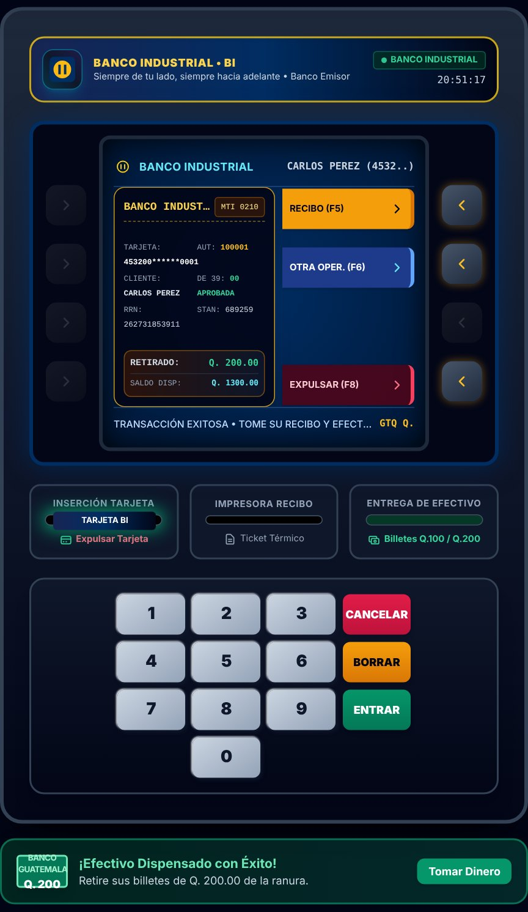
Opciones después de un retiro aprobado:
| Botón | Teclas | Acción |
|---|---|---|
| R1 RECIBO | F5 / 1 / 5 | Muestra el comprobante impreso (capítulo 8) |
| R2 OTRA OPER. | F6 / 2 / 6 / Enter | Vuelve al menú sin expulsar la tarjeta |
| R4 EXPULSAR | F8 / 8 / Esc | Termina la sesión |
61; si supera el saldo, 51.
El acumulado diario se reinicia al cambiar de día.8. Comprobante (recibo)
Con RECIBO (F5) se abre el comprobante de la última operación. Incluye:
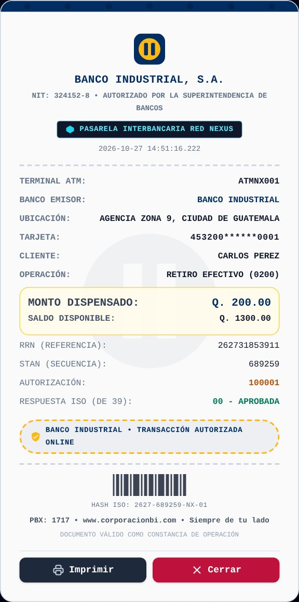
- Banco emisor, NIT y fecha y hora de la operación.
- Terminal (
ATMNX001), banco emisor y ubicación. - Tarjeta enmascarada y nombre del cliente.
- Operación: retiro (0200), consulta (0100), reversa (0420) o echo test (0800).
- Monto (dispensado o reversado) y saldo disponible.
- RRN: referencia única de la transacción (12 caracteres).
- STAN: número de secuencia de la terminal (6 dígitos).
- Autorización: código asignado por el banco (aparece "—" cuando la respuesta no lo incluye, por ejemplo en una reversa).
- Respuesta ISO (DE 39) y su significado.
Imprimir usa la impresora de la computadora; Cerrar (o Esc / Enter) cierra el comprobante.
9. Consulta de saldo
- En el menú principal pulse 3. Consulta de saldo (F3). El cajero envía una consulta 0100 con el PIN.
- Si el banco aprueba, se muestran la cuenta, el titular, la moneda, el saldo disponible y el saldo contable (mensaje de respuesta 0110).
- Opciones: RECIBO (F5), OTRA OPER. (F7) y EXPULSAR (F8).
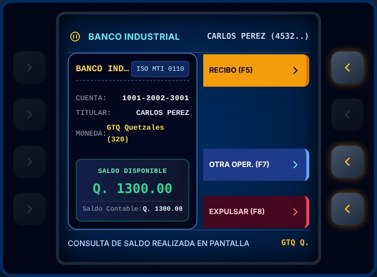
Si el PIN es incorrecto o la tarjeta está bloqueada o expirada, la consulta se rechaza igual que un retiro (capítulo 14).
10. Reversa del último retiro
La reversa anula un retiro que el banco aprobó pero que no se completó (por ejemplo, si el dispensador no entregó los billetes). El cajero envía un mensaje 0420 con el mismo RRN, monto y tipo de operación del retiro original, y el banco devuelve el dinero a la cuenta.
- Realice un retiro aprobado (capítulo 7) y vuelva al menú con OTRA OPER.
- Pulse 5. Reversa (0420) (F5).
- La pantalla muestra REVERSA APLICADA • SALDO RESTITUIDO, el mensaje 0430, el monto reversado y el saldo actualizado.
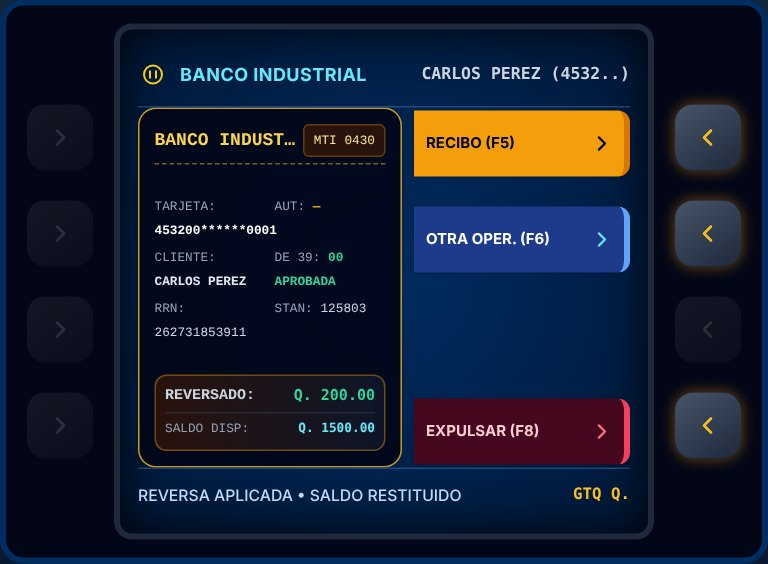
- Solo se puede reversar el último retiro aprobado de la tarjeta insertada, y una sola vez.
- Si no hay un retiro pendiente de reversar, aparece el aviso SIN TRANSACCIÓN QUE REVERSAR y no se envía nada.
- Al expulsar la tarjeta se pierde la referencia del último retiro.
11. Estado de cuenta
La opción 7. Estado de cuenta (F7) muestra los cuatro movimientos más recientes de la cuenta, del más nuevo al más antiguo, con la hora, el tipo de operación y el monto:
- Débitos (retiros, compras, transferencias enviadas) en rojo con signo −.
- Créditos (reversas, devoluciones) en verde con signo +.
- Consultas sin signo.
- Operaciones rechazadas en gris, con su código, por ejemplo RETIRO (DE39 55).
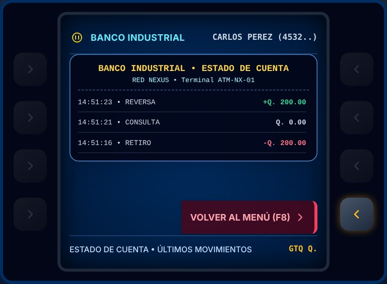
VOLVER AL MENÚ (F8) regresa al menú principal.
12. Seguridad del PIN, PIN incorrecto y bloqueo
Opción 4. Seguridad PIN
Explica en pantalla cómo se protege el PIN. El cajero no guarda ni muestra el PIN.
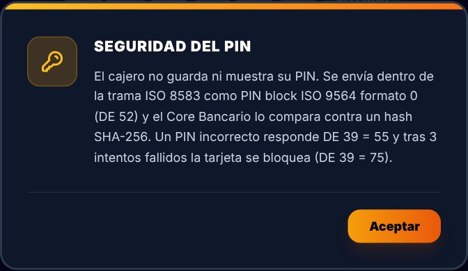
PIN incorrecto
- Si el PIN no coincide, el banco rechaza la operación con 55 - Clave PIN incorrecta.
- Pulse REINGRESAR PIN (F8) (o Enter): el cajero vuelve a pedir el PIN sin expulsar la tarjeta.
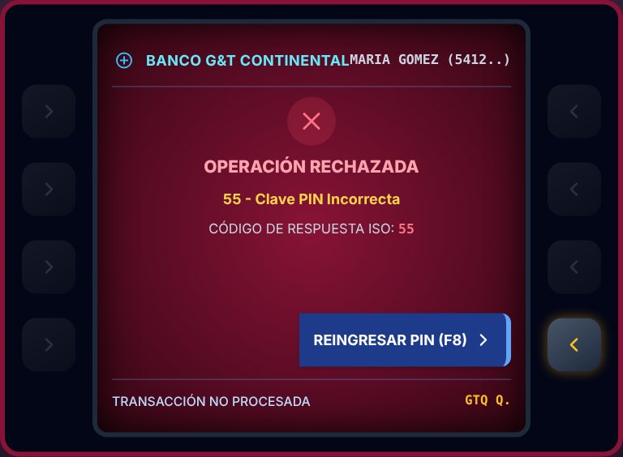
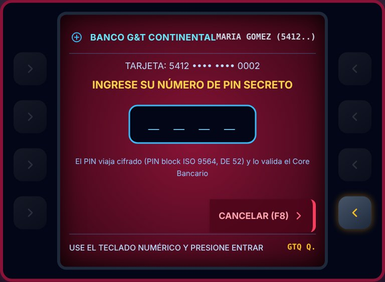
13. Echo test de red
La opción 6. Echo test (0800) (F6) comprueba que el cajero se comunica con el switch. No mueve dinero ni requiere PIN. Si la comunicación funciona, la pantalla muestra ECHO TEST EXITOSO • ENLACE CON EL SWITCH ACTIVO, el mensaje de respuesta 0810 y el estado ACTIVO.
14. Mensajes de rechazo
Cuando el banco no aprueba una operación, la pantalla muestra OPERACIÓN RECHAZADA con el código y su descripción. VOLVER AL MENÚ (F8) o Enter regresan al menú; Esc expulsa la tarjeta.
| Código | Significado | Qué hacer |
|---|---|---|
| 05 | Tarjeta bloqueada | La cuenta está bloqueada (por el administrador o por intentos de PIN). Un administrador puede desbloquearla. |
| 12 | Transacción inválida | Tipo de operación no soportado. |
| 13 | Monto inválido | Use un monto mayor que cero. |
| 14 | Cuenta o tarjeta inexistente | Verifique la tarjeta; si la escribió a mano, que exista en el Core. |
| 25 | Transacción original no encontrada | La reversa no encontró el retiro original. |
| 30 | Error de formato | La trama llegó incompleta o ilegible. Reintente. |
| 51 | Fondos insuficientes | Elija un monto menor o consulte el saldo. |
| 54 | Tarjeta expirada | Use otra tarjeta; un administrador puede cambiar el estado. |
| 55 | PIN incorrecto | Reingrese el PIN (capítulo 12). |
| 61 | Excede el límite diario | Retire un monto dentro del límite restante o espere al día siguiente. |
| 68 | Tiempo de espera agotado | El banco tardó en responder. Reintente. |
| 75 | Intentos de PIN excedidos | La tarjeta quedó bloqueada; retírela y contacte al administrador. |
| 91 | Banco no disponible | El Core Bancario no responde. Reintente más tarde. |
| 96 | Error del sistema | Error interno. Reintente; si persiste, revise los registros del sistema. |
15. Panel de administración: acceso
- Pulse Acceso Administrador (esquina superior derecha).
- Escriba el usuario y la contraseña. Por defecto son
admin/Nexus2026_Admin; se cambian en el archivo.env(ADMIN_USER,ADMIN_PASSWORD). - Pulse Ingresar. El servidor valida las credenciales; si son incorrectas aparece Usuario o contraseña incorrectos.
- Con el acceso concedido aparecen las pestañas Cuentas & Tarjetas Multibanca y Consola ISO 8583, y el botón Volver al Cajero (Usuario).
- Para salir pulse Cerrar Sesión Admin. La sesión también se cierra sola si el servidor rechaza las credenciales (por ejemplo, si se cambió la contraseña).
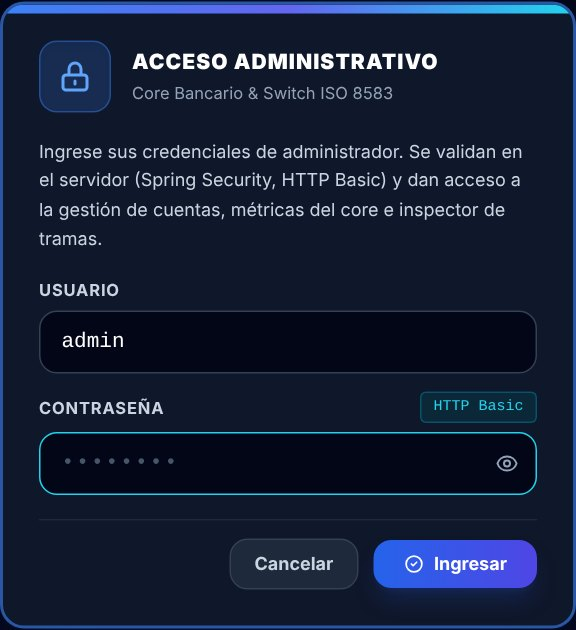
16. Gestión de cuentas y tarjetas
La parte superior muestra los indicadores del Core: número de cuentas, suma de saldos disponibles (saldo bóveda), número de transacciones registradas y estado del switch ISO 8583 (puerto 15000).
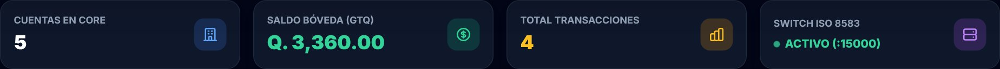
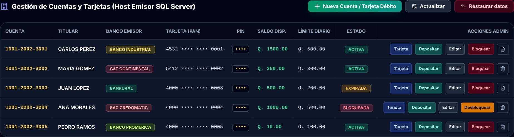
Botones generales
- Nueva Cuenta / Tarjeta Débito: alta de una cuenta con su tarjeta.
- Actualizar: vuelve a leer cuentas y transacciones.
- Restaurar datos: pide confirmación y devuelve las cinco cuentas de demostración a su saldo, estado y PIN iniciales (las recrea si se borraron) y borra el historial de transacciones. Las demás cuentas se conservan.
Acciones de cada cuenta
| Botón | Acción |
|---|---|
| Tarjeta | Muestra la tarjeta de débito y permite Probar esta Tarjeta en el Cajero (la inserta directamente). |
| Depositar | Acredita un monto a la cuenta (montos rápidos Q100, Q200, Q500 y Q1,000, o uno escrito). |
| Editar | Cambia titular, banco, saldo, límite diario, estado o PIN. |
| Bloquear / Desbloquear | Alterna el estado entre activa y bloqueada. Desbloquear también reinicia los intentos de PIN fallidos. |
| Papelera | Elimina la cuenta (pide confirmación). |
La columna PIN muestra siempre ••••: el PIN se guarda como hash y no se puede recuperar.
Nueva cuenta
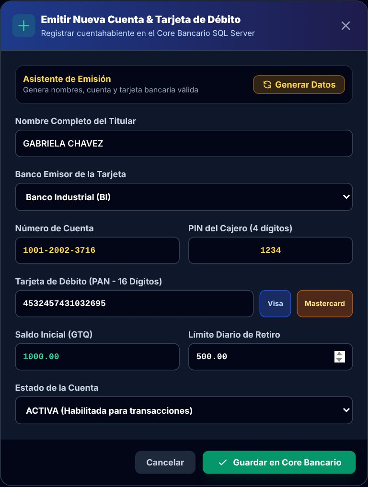
- Generar Datos completa el formulario con datos de ejemplo válidos.
- PIN: exactamente 4 dígitos.
- Tarjeta (PAN): 16 dígitos; los botones Visa y Mastercard generan uno.
- Saldo inicial, límite diario y estado (activa, bloqueada o expirada).
- Guardar en Core Bancario crea la cuenta. Si el número de cuenta o la tarjeta ya existen, se informa el error.
Editar, ver tarjeta y depositar
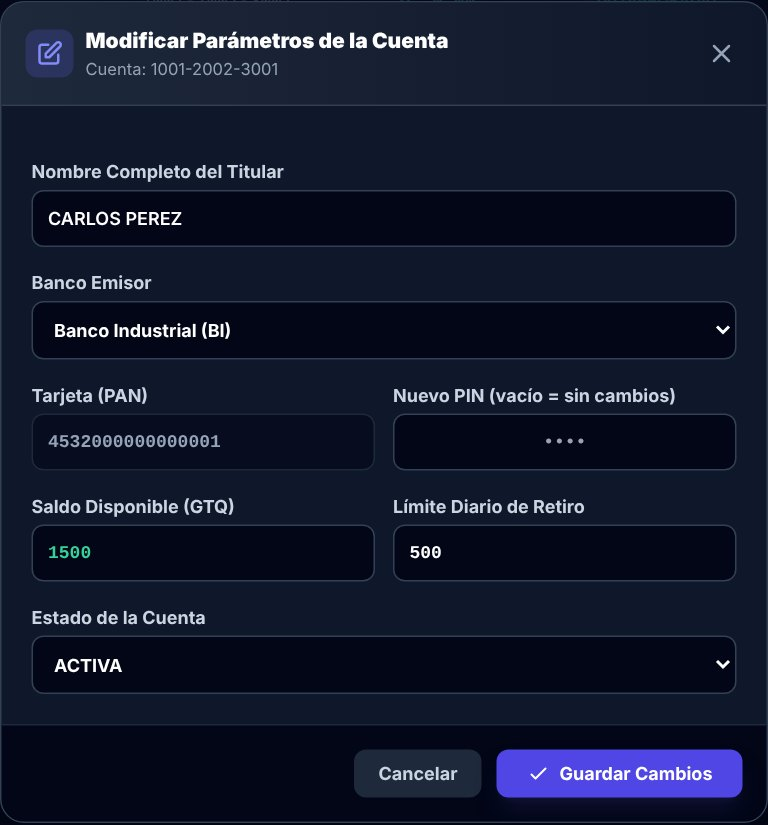
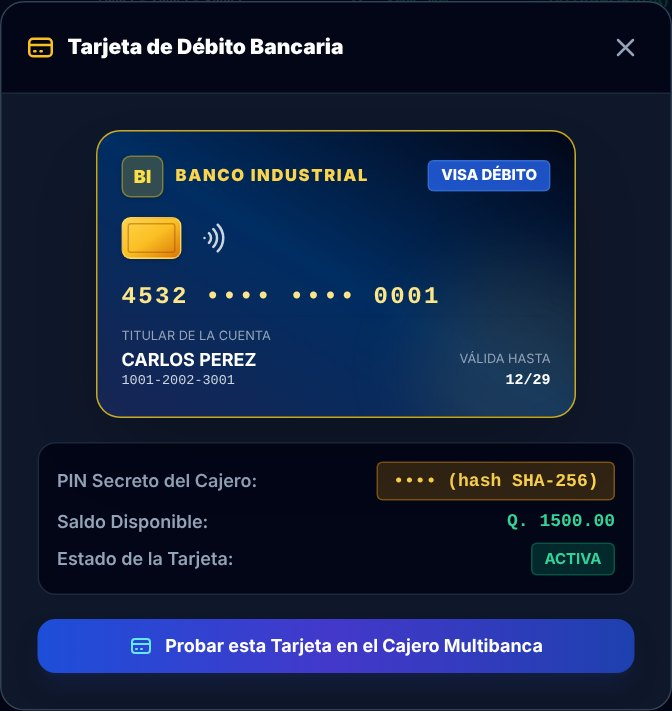
- En Editar, el campo Nuevo PIN aparece vacío: déjelo así para conservar el PIN actual, o escriba 4 dígitos para cambiarlo.
- El número de tarjeta no se puede modificar.
- En Tarjeta, el botón Probar esta Tarjeta en el Cajero vuelve al cajero con la tarjeta insertada.
- En Depositar, elija un monto rápido o escriba otro y pulse Aplicar Depósito; el saldo se actualiza al instante.
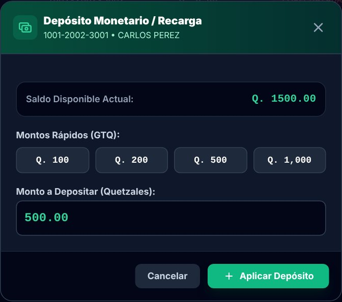
17. Historial de transacciones
Debajo de la tabla de cuentas se listan las transacciones registradas por el Core, de la más reciente a la más antigua: RRN, STAN, tipo de operación, cuenta, monto, código DE 39 (aprobada en verde, rechazada en rojo), autorización y fecha y hora.
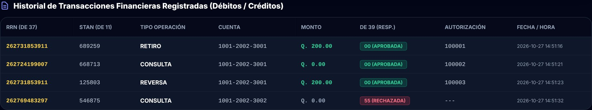
Observe que la reversa tiene el mismo RRN que el retiro que anuló, y que las operaciones rechazadas no tienen código de autorización.
18. Consola ISO 8583
La pestaña Consola ISO 8583 permite armar una transacción a mano y ver la trama completa. La transacción se procesa con el mismo flujo que una trama recibida por el socket TCP del Recolector, y afecta los saldos reales.
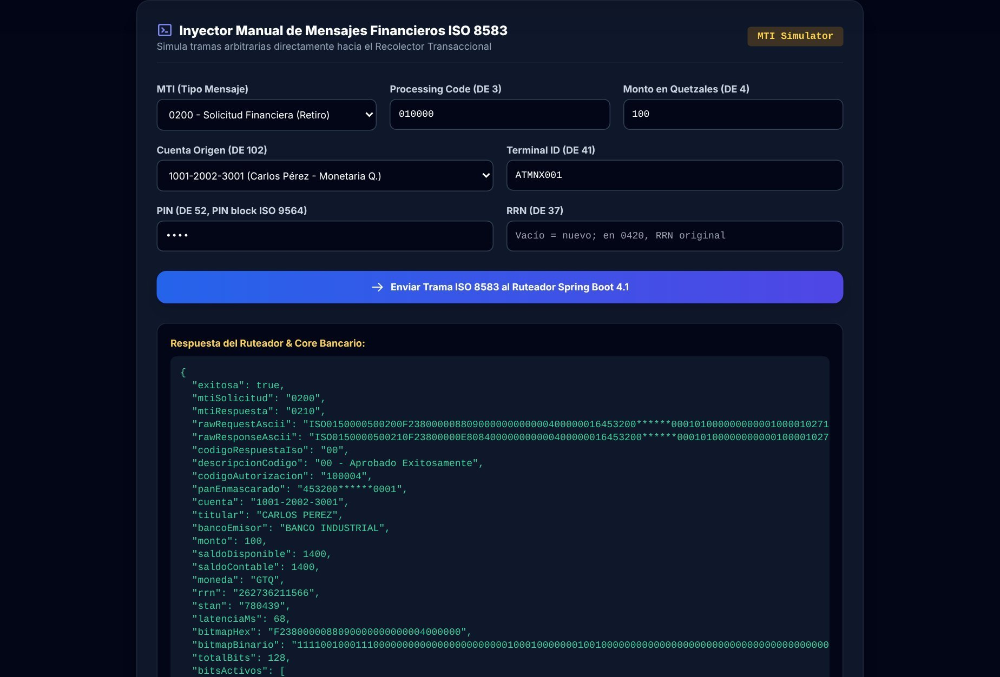
| Campo | Uso |
|---|---|
| MTI (tipo de mensaje) | 0200 retiro, 0100 consulta, 0420 reversa, 0800 echo test. |
| Processing Code (DE 3) | 010000 retiro, 000000 compra, 300000 consulta, 400000 transferencia, 200000 devolución. |
| Monto (DE 4) | Monto en quetzales. |
| Cuenta origen (DE 102) | Una de las cuentas de demostración. |
| Terminal ID (DE 41) | Identificador de la terminal (8 caracteres). |
| PIN (DE 52) | Opcional: 4 dígitos. Obligatorio para retiros y consultas. |
| RRN (DE 37) | Vacío para generar uno nuevo. En una reversa 0420, el RRN del retiro a anular. |
Al pulsar Enviar Trama ISO 8583 aparece la respuesta: tramas enviada y recibida en ASCII, bitmap, código DE 39 con su descripción, autorización, saldos, latencia y la lista de campos (Data Elements) enviados y recibidos. El PAN y el PIN block aparecen enmascarados.
19. Preguntas frecuentes y solución de problemas
| Situación | Causa probable | Solución |
|---|---|---|
| La página no abre | El sistema no está en ejecución o usa otro puerto. | Verifique con docker compose ps que cajero-app esté healthy y use el puerto de APP_HTTP_PORT en .env. |
| La billetera dice "Error de conexión con el Core Bancario" | La base de datos no está disponible. | Revise docker compose logs app y que cajero-sqlserver esté healthy. |
| El PIN se aceptó pero el retiro dice 55 | El PIN se valida en el banco al enviar la operación. | Reingrese el PIN correcto (capítulo 12). |
| La tarjeta quedó bloqueada (75 y luego 05) | Tres PIN incorrectos seguidos. | Panel de administración → Desbloquear, o Restaurar datos para las cuentas de demostración. |
| "Otra cantidad" no acepta el monto | El monto no es múltiplo de Q100. | Use Q100, Q200, Q300… |
| La reversa dice "Sin transacción que reversar" | No hay un retiro aprobado pendiente en esta sesión de tarjeta. | Haga un retiro y luego la reversa, sin expulsar la tarjeta. |
| Retiro rechazado con 61 aunque hay saldo | Se alcanzó el límite diario de retiro. | Retire menos, espere al día siguiente o aumente el límite desde Editar. |
| El administrador no puede iniciar sesión | Usuario o contraseña distintos a los de .env. | Revise ADMIN_USER y ADMIN_PASSWORD y reinicie con docker compose up -d. |
| Las teclas F1–F8 no responden | No hay tarjeta insertada o el cursor está dentro de un campo de texto. | Inserte una tarjeta y haga clic fuera de los campos. |
| Quiero empezar de cero | — | Restaurar datos en el panel, o docker compose down -v seguido de docker compose up -d para recrear la base. |
RED NEXUS • Manual de Usuario • Recolector Transaccional ISO 8583 • Octubre de 2026